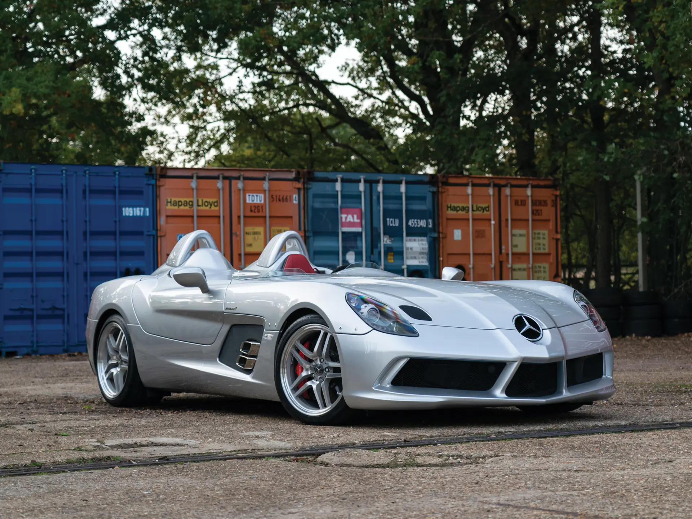
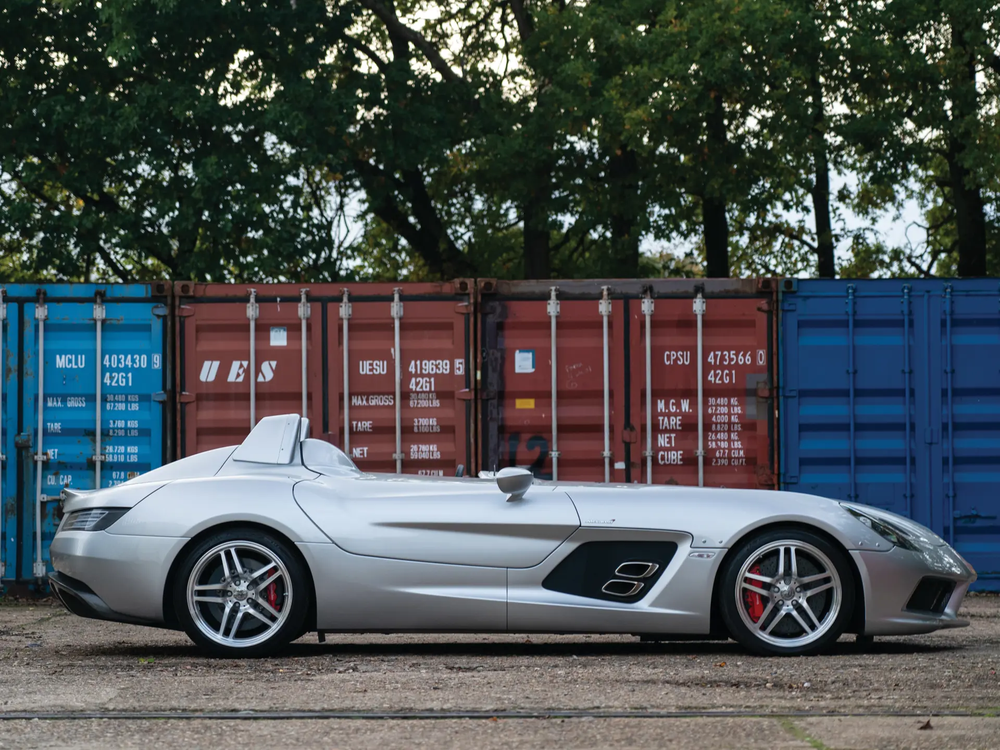

The Mercedes-Benz SLR McLaren Stirling Moss represents the ultimate expression of the SLR lineage. A car that pushed the boundaries of what a grand touring supercar could become. Developed as a collaboration between Mercedes-Benz and McLaren, the SLR series demonstrated that a traditionally luxury-focused manufacturer could compete at the highest levels of performance, standing alongside more established supercar brands.
The Stirling Moss edition, introduced in 2009, was the final and most extreme evolution of this platform. Stripped of its windshield and roof, the car embraced a pure, uncompromising design inspired by the legendary 300 SLR driven by Stirling Moss himself. This radical approach reduced weight significantly while enhancing the sense of speed and connection to the environment.

Powered by a supercharged 5.4-litre V8 producing over 650 horsepower, the Stirling Moss delivered immense performance, paired with a top speed that surpassed many modern open-top hypercars such as the Ferrari Monza SP1/SP2, McLaren Elva, and Aston Martin V12 Speedster. Its long-nose design, rear-set cabin, and advanced aerodynamics contributed to both stability and visual drama.
| Engine | 5.5L Supercharged V8 |
| Power | 641bhp |
| Weight | 1551kg |
| Transmission | 5-speed Automatic |
| 0-62 | 3.5 s |
| Top Speed | 217mph |
| Year | 2009 |